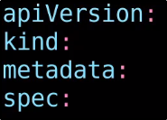

Demo - PODs with YAML
In questa demo, creiamo un bel POD usando un YAML.
Consigliatissimo: Un qualsiasi Text Editor che corregga la sintassi!
Creiamo il template di base:

Eccone uno configurato con un container:

Creiamo il POD usando kubectl "apply" o "create", specificando il file YAML con "-f":

Otteniamo più info riguardo il POD: